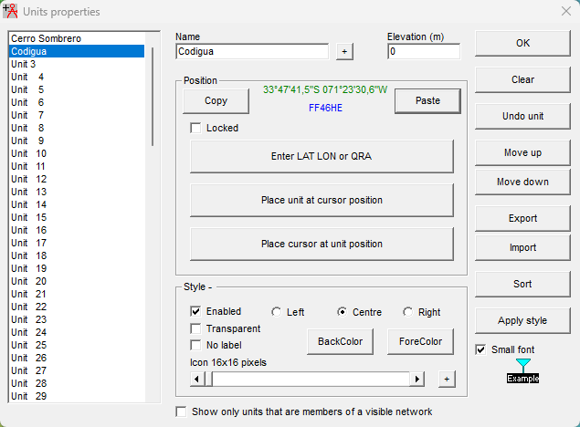

Capítulo 02 · Módulo 01
Importar desde Google Earth Pro.
Copiar los dos marcadores y pegarlos en sus unidades de Radio Mobile.
De Google Earth Pro a Radio Mobile
Trabajaremos con los marcadores de Cerro Sombrero y Codigua. Esta preparación tiene dos módulos: primero copiar las ubicaciones y después cargar el terreno y corregir las elevaciones. A continuación seguiremos con Parámetros y Topología.
Preparar y copiar el marcador
- En Google Earth Pro, comprueba el nombre y las coordenadas completas del sitio. Utiliza preferentemente Relativa al suelo: el marcador base puede quedar a 0 m; la altura de antena del escenario, 15 m, se registra aparte.
- Copia el marcador del sitio que vas a importar. Conserva los mismos nombres en ambos programas.
- En Radio Mobile, abre Units properties, selecciona la unidad de destino y pulsa Paste.
- Revisa nombre y coordenadas; repite el proceso para el otro extremo y confirma con OK.
Puedes consultar la captura del marcador en Google Earth Pro y registrar los datos en la ficha del enlace.

Elevation no es la altura de la antena. Este campo corresponde a la elevación del terreno de la unidad. No escribas los 15 m de instalación para corregir el cero: la antena se configura aparte, con altura sobre el suelo.
Comprobar antes de seguir
- Debe existir una unidad llamada Cerro Sombrero y otra llamada Codigua.
- Antes de Paste, el nombre del marcador copiado debe coincidir con la unidad seleccionada.
- Revisa las coordenadas de ambos sitios y conserva su formato y hemisferio.
En esta primera pasada registramos las ubicaciones. En el siguiente módulo cargaremos el terreno; después volveremos a pegar los marcadores en el orden que corresponde.